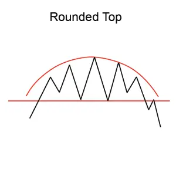
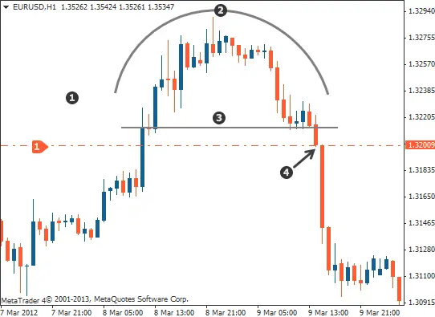

Implicaciones
Un Top redondeado se considera una señal de baja, indicando una posible reversión de la tendencia ascendente actual a una nueva tendencia descendente.
Descripción
Un Top redondeado tiene forma de cúpula, y a veces se le denomina como un recipiente invertido o un top de plato. El patrón se confirma cuando el precio se rompe por debajo de su media móvil.

Características importantes
Las siguientes son características importantes a buscar en un Top redondeado.
Forma
Robert D. Edwards y John Magee describen el top redondeado como un "cambio gradual, progresivo y bastante simétrico en la dirección de la tendencia, producido por un cambio gradual en el equilibrio entre la compra y la venta". Para un top redondeado, el precio puede fluctuar o ser lineal. Sin embargo, la curva general debe ser lisa y regular, sin picos evidentes.
Volumen
El volumen puede fluctuar, sin embargo, el volumen generalmente parece ser concave, y sigue el inverso del patrón de precios. Por lo tanto, a medida que el precio comienza a subir, el volumen tiende a disminuir. Una vez que la parte superior del patrón de precios comienza su giro hacia abajo, el volumen tiende a aumentar.
Como escribe Martin J. Pring en su libro, Análisis Técnico Explicado, "La ventaja de la implicación de los picos redondeados es el hecho de que el volumen se reduce a medida que los precios alcanzan sus niveles más altos y luego se expande a medida de que caen".
Duración del tope redondeado
Los picos redondos suelen ocurrir durante un período de aproximadamente 3 semanas, pero también se pueden observar durante varios años.
Consideraciones de negociación
Duración del patrón
La duración del patrón indica la importancia del movimiento de los precios. Clifford Pistolese escribe, "una ronda que se completa en un par de meses suele ser menos significativa que una que tarda mucho más tiempo en completarse"."
Precio objetivo
Después de una breakout a la baja, los analistas técnicos pueden usar el precio inicial en el lado izquierdo de la cúpula para determinar dónde puede ir el precio. Sin embargo, usted va a querer supervisar el stock con interés. El precio puede terminar más alto de lo que era al comienzo del patrón. Además, existe el potencial para que el precio aumente después de que el top redondeado completa. Thomas N. Bulkowski escribe que, "la mayor parte del tiempo los precios suben después de que se completa un top de arreglo".
Criterios que respaldan
Volumen
El volumen debe disminuir a medida que se forman los patrones.
Media móvil
Las medias móviles ayudan a determinar si la cima redondeada tiene el potencial de descender. Para un tope redondeado, el precio debe cruzar por debajo de la media móvil cuando comience a descender. Cuando este crossover ocurre, el patrón es "confirmado".
Hay una abundancia de literatura sobre medias móviles si usted está interesado en entender cómo funcionan. En términos simples, la media móvil se puede utilizar para detectar un posible éxito o fracaso del patrón. Por lo general, una media móvil representa el precio de cierre de una acción durante un número determinado de días, y se puede utilizar para anticipar la dirección general de una actividad. Dependiendo del tipo de acción, los inversores pueden decidir utilizar una media móvil a largo, medio o corto plazo. Por ejemplo, los patrones de duración corta usualmente usan una media móvil de 50 días, y los patrón más largos usualmente un promedio móvil de 200 días.
Líneas de tendencia
Las líneas de tendencias de precios proporcionan a los inversionistas una manera de vigilar y validar un top redondeado. Para rastrear un posible pico redondeado, los analistas técnicos dibujan una línea justo por debajo de los límites inferiores de la tendencia ascendente de los precios. La línea de tendencia es recta, independientemente de las fluctuaciones del precio. Cuando el precio cae por debajo de la línea, hay indicios de que la tendencia ascendente ha terminado.
Cuando comienza la tendencia descendente, los analistas técnicos dibujan otra línea justo por encima de los límites superiores del patrón de precios, y continúan hacia abajo hacia el precio de partida de la formación de patrones. Cuando el precio sube por encima de la línea, hay una indicación de que la nueva tendencia descendente ha terminado.
Criterios que refuten
Breakouts por encima
Una forma redonda prometedora con una breakout por encima de la media móvil, en lugar de por debajo, puede no establecer o mantener una nueva tendencia descendente.
Comportamiento subyacente
Un Top redondeado se forma a medida que el sentimiento de los inversionistas cambia gradualmente de bullishness a bearishness. A medida que el sentimiento se eleva hacia la cima, hay una caída en el volumen de negociación debido a la indecisión en el mercado. Hay un período de consolidación en la parte superior a medida que el comercio salta dentro de un cierto rango, y finalmente hay un descenso gradual que marca el cambio a la pobreza. A medida que los inversionistas se vuelven más decididos sobre la austeridad, hay un aumento en el volumen de negociación.
